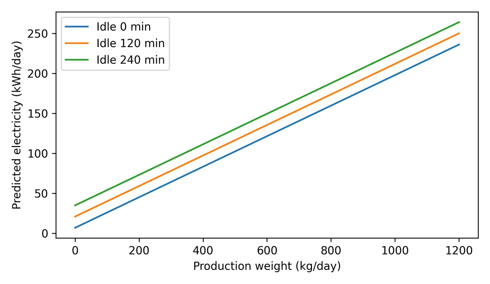

데이터로 찾는 산업·건물 에너지절감 실무 — 48쪽
그림 8-1. Former Baseline 식으로 계산한 생산중량·비가동시간별 예측 전력 민감도. [S02] 공 개식을 이용해 재구성. 생산중량 계수는 제품 생산에 필요한 변동에너지의 일부를 설명한다. 비가동시간 계수는 생산하지 않는 동안 지속되는 대기·가열·부대설비 손실을 설명한다. 같은 생산량에서 비가동시간이 증가하는 것은 개선 가능한 손실요인으로 해석 한다. M&V | 평가일의 실제 생산중량과 비가동시간을 회귀식에 입력해 Adjusted Baseline 을 계산한다. 공정조건이 학습범위를 벗어나거나 LINE 구성이 바뀌면 신규일 QC 와 재학습 여부를 검토한다. CASE 06 | 사출·압출 공정과 Utility 의 1 분 운전패턴 사출기·압출기뿐 아니라 전용 냉각기, 공조·냉난방, 공기압축기 등 Utility 를 함께 분석해 생산설비 정지·저부하 시에도 지속되는 기저부하와 운전연동 문 제를 찾는다. 2022 년 5 월 공장 전력사용량 221,940kWh, 평균부하 약 298kW 전년 동월 142,704kWh 대비 약 55% 증가

인쇄본 기준 p. 48